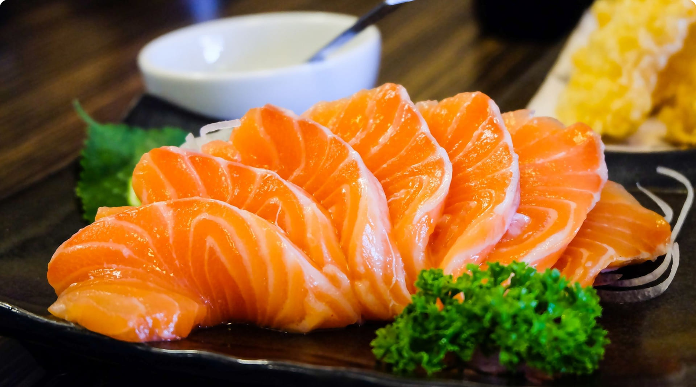
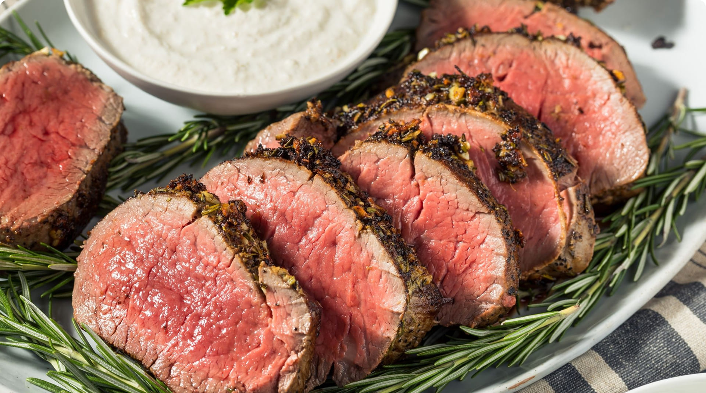
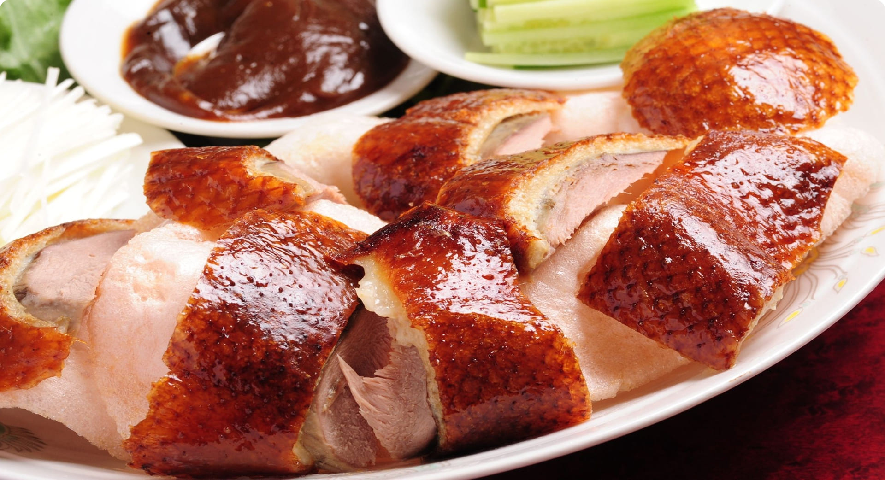
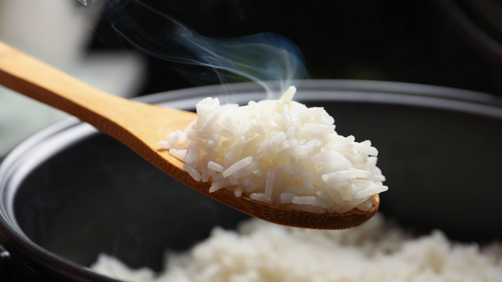

心に響く、京の旬を味わう
京都ならではの旬の食材を活かし、季節ごとの味わいをお楽しみいただけます。
朝ごはんにも地元の素材を取り入れ、心温まる一品をご用意しております。
どのお料理も、京都の恵みを感じていただけるよう、心を込めてお作りしています。
ご夕食
Dinner
極上和食コース 〜 煌 Kou 〜
※ 写真は一例となります。季節により内容は異なります。

春のお品書き一例
季節の洋食懐石 〜 雅 Miyabi 〜
※ 写真は一例となります

春のお品書き一例
こだわり中華懐石 〜 粋 Iki 〜
※ 写真は一例となります

ご朝食
Breakfastもりのご馳走朝食
※ 写真は一例となります

【重要】
食物アレルギーの対応につきまして
【対応できるアレルギー】
エビ・かに・鶏卵・そば・小麦・乳製品・落花生（主要７品目）＋鶏・豚・牛肉
- 上記品目が主原料として使用の場合、別の食材へ差し替えが可能です。
- 当日のお申し出はお断りさせて頂きます。３日前までにお申し付け下さい。
- 調理過程においてアレルゲン物質が微量に混入する可能性がございます。完全な除去を保証するものではございません。